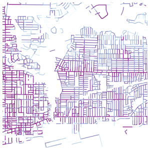

Ventnor

a global topographic base map

just the roads of Great Britain

parking ticket density in Toronto

drone strikes in Afghanistan

olympic cities

rinks, population density, and income

volcanoes & tectonic plates

Toronto building heights - 2015

blueprint cartography for google maps

cinema screens per capita

migration routes of Syrian refugees

NA high speed rail concept

UAE expatriate demographics

visualizing Toronto's transit ridership

Toronto's red light cameras

NHL team relocation

MLB team relocation

Cosmic streetcar loop

major rail lines in the USA